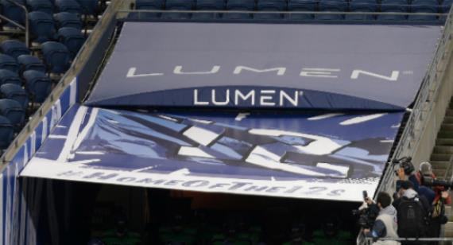

AI热还在烧 美电信商Lumen大幅调高自由现金流股价暴涨
Category: Uncategorized
与联发科及达发曾有合作关系的美国电信商Lumen Technologies，股价在周二飙涨93%，创下单日最大涨幅并使公司市值暴增24.5亿美元之后，盘后交易又续涨逾30%，投资人可能看好该公司能将AI热转化成为业绩。
Lumen周二公布财报，调高今年自由现金流的预测，由1亿至3亿美元拉到10亿至12亿美元间，远超市场预期的2.17亿美元。此前该公司表示，AI需求带动50亿美元的新业务，目前正进一步洽谈70亿美元的潜在销售。 !function(v,t,o){var a=t.createElement("script");a.src="https://ad.vidverto.io/vidverto/js/aries/v1/invocation.js",a.setAttribute("fetchpriority","high");var r=v.top;r.document.head.appendChild(a),v.self!==v.top&&(v.frameElement.style.cssText="width:0px!important;height:0px!important;"),r.aries=r.aries||{},r.aries.v1=r.aries.v1||{commands:};var c=r.aries.v1;c.commands.push((function(){var d=document.getElementById("_vidverto-bc0de73c10937be205a8d57fd75a9690");d.setAttribute("id",(d.getAttribute("id")+(new Date()).getTime()));var t=v.frameElement||d;c.mount("10171",t,{width:720,height:405})}))}(window,document);
此际正值投资人对AI交易的疑虑与日俱增，因为大型科技公司的财报显示支出增加，但投资回报甚微。受辉达（Nvidia）、微软（Microsoft）和亚马逊（Amazon）等AI宠儿股价下跌拖累，那斯达克100指数最近跌入修正区间。Lumen也说要提高资本支出，满足其认为日益增长的AI需求，预期全年资本开支增加到31亿至33亿美元间，高于先前的27亿至29亿美元间。
该公司上季（第2季）营收32.7亿美元，略高于市场预期的32.5亿美元。经调整的EBITDA是10.1亿美元，市场预期10.2亿美元。调整后每股亏损13美分，市场预期每股亏损5.8美分。
彭博资讯分析师John...

电信商Lumen Technologies周二股价在盘后交易大涨，因该公司大幅调高自由现金流，似能将AI热转化为业绩。(美联社)
与联发科及达发曾有合作关系的美国电信商Lumen Technologies，股价在周二飙涨93%，创下单日最大涨幅并使公司市值暴增24.5亿美元之后，盘后交易又续涨逾30%，投资人可能看好该公司能将AI热转化成为业绩。
Lumen周二公布财报，调高今年自由现金流的预测，由1亿至3亿美元拉到10亿至12亿美元间，远超市场预期的2.17亿美元。此前该公司表示，AI需求带动50亿美元的新业务，目前正进一步洽谈70亿美元的潜在销售。
此际正值投资人对AI交易的疑虑与日俱增，因为大型科技公司的财报显示支出增加，但投资回报甚微。受辉达（Nvidia）、微软（Microsoft）和亚马逊（Amazon）等AI宠儿股价下跌拖累，那斯达克100指数最近跌入修正区间。Lumen也说要提高资本支出，满足其认为日益增长的AI需求，预期全年资本开支增加到31亿至33亿美元间，高于先前的27亿至29亿美元间。
该公司上季（第2季）营收32.7亿美元，略高于市场预期的32.5亿美元。经调整的EBITDA是10.1亿美元，市场预期10.2亿美元。调整后每股亏损13美分，市场预期每股亏损5.8美分。
彭博资讯分析师John Butler周二指出，「Lumen似乎准备兴建新设施，把握AI相关数据中心互连的新机会，2024年资本支出的指引提高了4亿美元。但目前不清楚这可能产生多少收入以及何时实现。」他还补充说，该公司增加的现金流（大约7亿美元）大部分来自一次性退税，而非AI。
华尔街对该公司较持怀疑态度，根据彭博数据，该公司获得的分析师评级里，并没有「买入」，7位主张持有，6位主张卖出。尽管如此，该公司股价仍一路走高，从7月初到周二收盘，股价累涨超过350%。